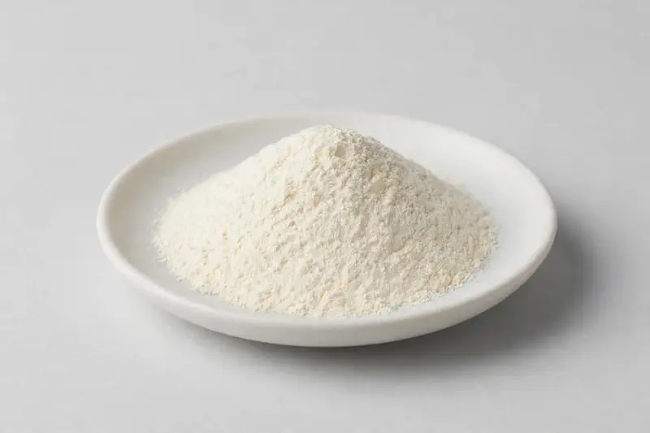

Acacia Fiber — a gentle soluble-fiber gum positioned for prebiotic and digestive-comfort formulations.

Overview
Acacia fiber is the dried gum exudate of Acacia senegal, valued in supplement and food design for its high soluble-fiber content and low viscosity in use. Buyers commonly request 90%+ soluble fiber grades. Interest has tracked the broader prebiotic and low-FODMAP-friendly formulation trend. As a Xi'an-based trading company sourcing through vetted partner producers, we handle grades as a powder matched to your target specification.
Specifications below reflect commonly requested options in the market — not a stock list. Share your target spec and we'll confirm exactly what we can supply, honestly.
| Specification | Details |
|---|---|
| Botanical identity | Acacia senegal gum fiber powder |
| Marker compound | Commonly requested spec grades: 90%+ soluble fiber; also lower-fiber gum grades for food use |
| Appearance | Fine powder, color typical of the extract |
| Mesh size | Typically 80–100 mesh (confirm per inquiry) |
| Testing | COA/TDS arranged on request; scope agreed per your spec |
Applications
Documentation
We don't claim in-house labs or certifications we don't hold. COA and TDS documents can be arranged on request, and testing scope is agreed against your specification before supply.
FAQ
Related products
Theobroma cacao
Key marker: Theobromine 10-20%
View specs →Codonopsis pilosula
Key marker: 10:1 or polysaccharides
View specs →Rehmannia glutinosa
Key marker: 10:1 or catalpol
View specs →Ceratonia siliqua
Key marker: 4:1 / 10:1 ratios
View specs →Elettaria cardamomum
Key marker: 10:1 / volatile-oil grades
View specs →Send your target spec and volumes — we'll respond with a tailored quotation.
Request a Quote